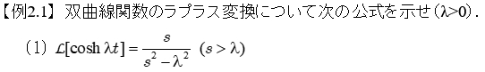
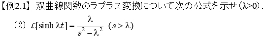

| (%i1) |
/*記号の並びのために，あえて宣言する．*/ declare(λ, constant); /*λを定数として宣言*/ |
| (%i2) | assume(λ>0); /*記号の仮定*/ |
| (%i3) | f(t):=cosh(λ·t); /*関数の定義*/ |
| (%i4) |
/*関数f(t)のラプラス変換*/ laplace(f(t), t, s); |
| --> | /*-----上式が設問(1)の答え-----*/; |

| (%i5) | f(t):=sinh(λ·t); /*関数の定義*/ |
| (%i6) |
/*関数f(t)のラプラス変換*/ laplace(f(t), t, s); |
| --> | /*-----上式が設問(2)の答え-----*/; |
| --> |
/*【コメント】Maximaでは，cosh(λt)やsinh(λt)のラプラス変換において， 「s＞λ」の条件は尋ねられない．*/; |
Created with wxMaxima.